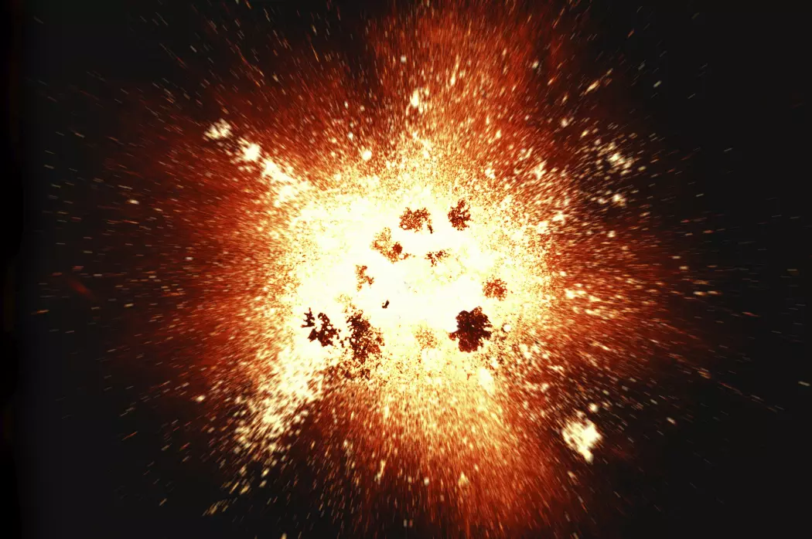
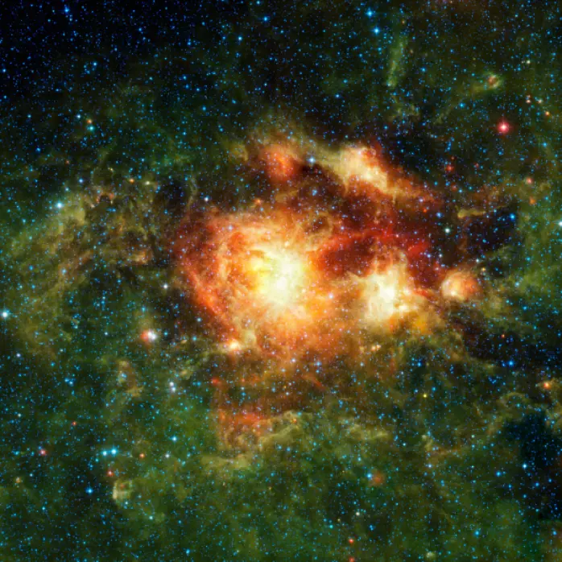
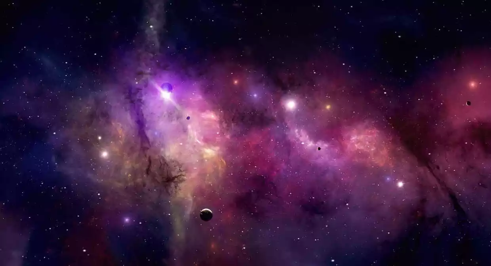
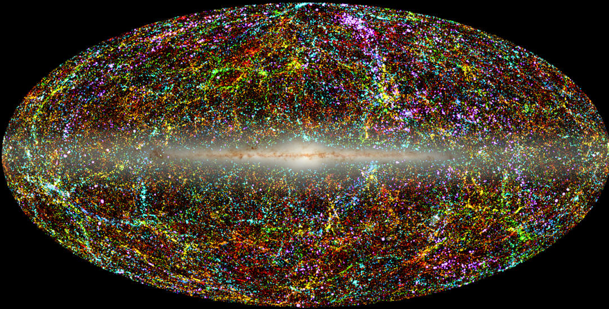
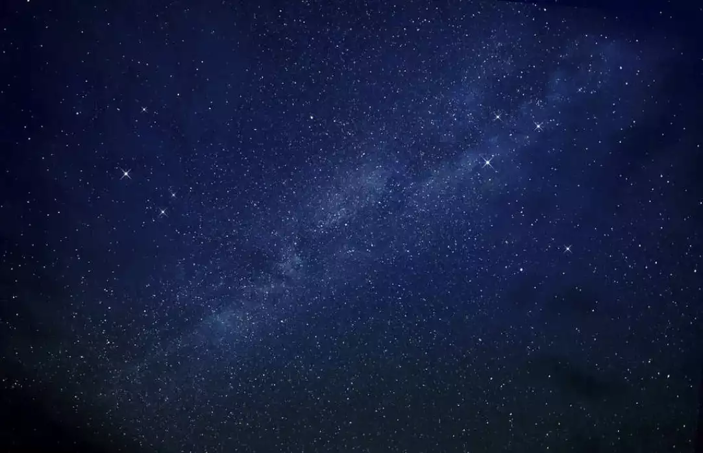
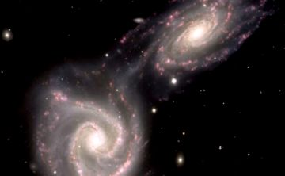

Datos Curiosos del Universo
🌟Estaba caliente.
La teoría más aceptada sobre el origen del universo es la del Big Bang, aunque nadie sabe exactamente qué fue lo que originó este estallido, pero sí que el universo estaba increíblemente caliente en el momento del estallido y se iba enfriando a medida que se expandía. Un minuto luego del Big Bang, se estima que la temperatura era de 1000 millones Kelvin.
🌟A medida que envejece, el universo se enfría.
Diversas observaciones en galaxias lejanas han demostrado que el universo se está expandiendo a pasos agigantados. Otros datos demuestran que gradualmente se va enfriando, por lo que se puede llegar a considerar que el fin del universo se dará cuando este se congele.
🌟El universo abarca un diámetro de 150 mil millones de años luz.
Eso mismo: medidas actuales creen que el universo tiene un diámetro de aproximadamente 150 mil millones de años luz, aunque se expande cada vez más. Aunque parece poco lógico teniendo en cuenta la edad del Universo, debemos saber que se está expandiendo a una velocidad cada vez mayor.
🌟El universo tiene una edad de 13700 millones de años.
Esta medida se hace en base a la radiación cósmica de fondo y tan solo tiene un 1% de precisión. Métodos más antiguos medían la abundancia de núcleos radiactivos y se hacían observaciones en cúmulos globulares de las estrellas más viejas.
🌟El universo es plano.
Basados en la teoría de la relatividad de Einstein hay solo tres formas que puede tener el universo: abierta, cerrada y plana. Las mediciones han confirmado que, efectivamente, es plana. Combinando geometría y la idea de la llamada materia oscura se llega a la conclusión de que la forma más probable en que el universo llegue a un fin es mediante la congelación.
🌟Estructuras a gran escala del universo.
Si tenemos en cuenta solo las grandes estructuras del universo, está formado por filamentos huecos, supercúmulos y grupos de galaxias. Algunos supercúmulos forman parte de las paredes, que a su vez son parte de los filamentos. Los espacios vacíos son conocidos como huecos, y estas agrupaciones de cosas y vacíos se debe a la diferencia de temperatura al generarse el universo.
🌟Una gran proporción de lo que se componen las cosas no lo podemos ver.
La luz, las ondas de radio o los rayos X son algunas de las cosas que nos permiten ver parte del universo, pero lo cierto es que la mayoría aún está oculta. Pero otros fenómenos como los cambios en la temperatura, las velocidades orbitales o la velocidad de rotación de las galaxias son la evidencia de que eso que no vemos está ahí, que la materia oscura existe.
🌟No hay un centro del universo.
No es ni la Tierra, ni ningún otro planeta, galaxia ni nada en particular. El universo no tiene centro, y si lo tuviera no sería ni nuestro planeta ni nuestra galaxia.

🌟Las galaxias buscan separarse lo más posible una de la otra.
Las galaxias se están separando la una de la otra a un ritmo cada vez más acelerado, lo que lleva a la conclusión de que, probablemente, el universo podría finalizar en el llamado Big Rip, un desgarro del mismo. Los científicos que creen en este final tan catastrófico se basan en la idea de que esta expansión no podrá seguir por siempre.
